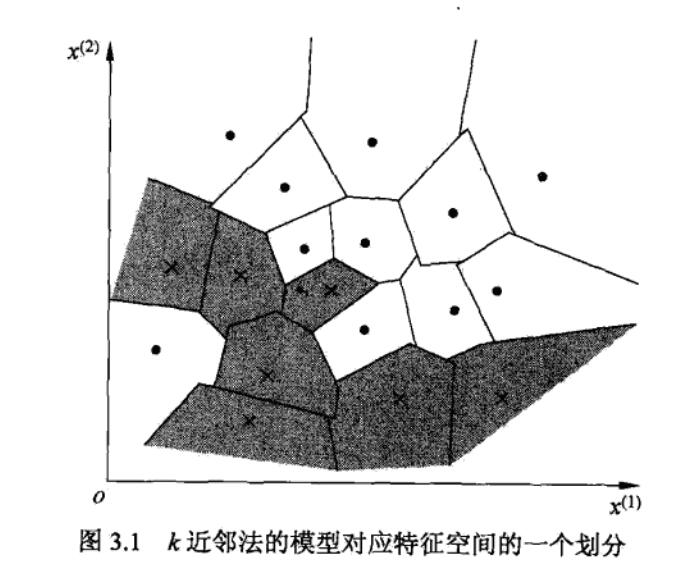
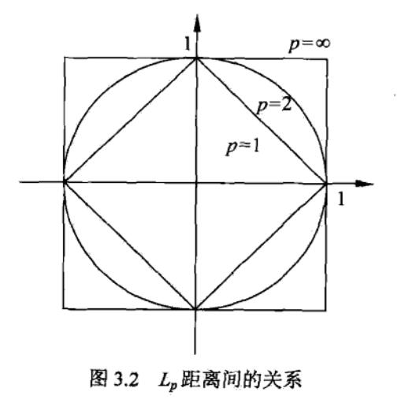
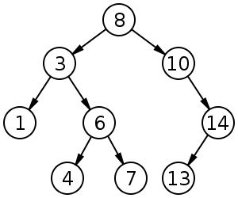

k 近邻法的输入为实例的特征向量，对应于特征空间的点；输出为实例的类别，可以取多类。k 近邻法假设给定一个训练数据集，其中的实例类别已定。分类时，对新的实例，根据其 k 个最近邻的训练实例的类别，通过多数表决等方式进行预测。因此，k 近邻法不具有显式的学习过程。k 近邻法实际上利用训练数据集对特征空间进行划分，并作为其分类的“模型”。k 值的选择、距离度量及分类决策规则是 k 近邻法的三个基本要素。
k 近邻算法简单、直观：给定一个训练数据集，对新的输入实例，在训练数据集中找到与该实例最邻近的 k 个实例，这 k 个实例的多数属于某个类，就把该输入实例分为这个类。
kNN算法：
输入：训练数据集T={(x1,y1),(x2,y2),⋯,(xN,yN)}，其中xi∈X⊆Rn是实例的特征向量，yi∈Y={c1,c2,⋯,cK}是实例的类别，i=1,2,⋯,N；实例特征向量x
输出：实例x所属的类y
- 根据给定的距离度量，在训练集T中找出与x最近邻的k个点，涵盖这k点的x的邻域记作Nk(x)；
- 在Nk(x)中根据分类决策规则决定x的类别y：
y=argcjmaxxi∈Nk(x)∑I(yi=cj),i=1,2,⋯,N;j=1,2,⋯,K
k 近邻法的特殊情况是 k = 1 的情形，称为最近邻算法。对于输入的实例点（特征向量）x，最近邻法将训练数据集中与 x 最近邻点的类作为 x 的类。
k 近邻法没有显式的学习过程。
k 近邻法使用的模型实际上对应于特征空间的划分。模型由三个基本要素——距离度量、k 值的选择和分类决策规则决定。
KNN模型由三个基本要素——距离度量，K值选择，分类决策决定。当三要素和训练集确定后，对任何一个新的输入实例，它所属的类唯一地确定。
KNN 使用的模型实际上对应于特征空间的划分。特征空间中，对每个训练实例点 𝑥𝑖，距离该点比其它点更近的所有点组成一个区域，叫作单元（cell）。每个训练实例拥有一个单元。所有的训练实例点的单元构成对特征空间的一个划分。如下图所示。

特征空间中两个实例点的距离是两个实例点相似程度的反映。k 近邻模型的特征空间一般是 n 维实数向量空间 Rn。使用的距离是欧式距离，如更一般的 Lp 或 Minkowski 距离。
设特征空间X是n维实数向量空间Rn，xi,xj∈X,xi=(xi(1),xi(2),⋯,xi(n))T,xj=(xj(1),xj(2),⋯,xj(n))T，xi,xj的Lp距离：
Lp(xi,xj)=(l=1∑N∣∣∣∣xi(l)−xj(l)∣∣∣∣p)p1
其中，p≥1。当p=2时，称为欧氏距离，即：
L2(xi,xj)=(l=1∑N∣∣∣∣xi(l)−xj(l)∣∣∣∣2)21
当p=1时，称为曼哈顿距离，即：
L1(xi,xj)=l=1∑N∣∣∣∣xi(l)−xj(l)∣∣∣∣
当p=∞时，是各个坐标距离的最大值，即：
L∞(xi,xj)=lmax∣∣∣∣xi(l)−xj(l)∣∣∣∣
由不同的距离度量所确定的最近邻点是不同的。

离原点 (0, 0) 不同的距离度量会“圈住”不同范围的点。
K值的选择会对KNN结果产生重大影响。
选择较小的K值：
如果选择较小的K值，相当于用较小的邻域中的训练实例进行预测，只有与输入实例较近的训练实例才会对预测结果起作用。“学习”的近似误差会减小。
缺点是“学习”的估计误差会增大，预测结果对近邻的实例点非常敏感。如果邻近的实例点恰巧是噪声，预测就会出错。
K值的减小意味着整体模型变得复杂，容易发生过拟合。
近似误差：可以理解为对现有训练集的训练误差。
估计误差：可以理解为对测试集的测试误差。
选择较大的K值：
如果选择较大的K值，相当于用较大邻域中的训练实例进行预测。其优点是减小学习的估计误差，缺点是近似误差会增大。这时离输入实例较远的训练实例起预测作用，使预测发生错误。
K值的增大意味着整体模型变得简单。K=N时，无论输入实例是什么，都将简单地预测它属于在训练实例中最多的类，这时模型过于简单，完全忽略训练实例中的大量有用信息，是不可取的。
在应用中：
K值一般取一个比较小的数值，通常采用交叉验证法来选取最优的K值。
KNN的分类决策规则往往是多数表决，即由输入实例的K个邻近的训练实例中的多数类决定输入实例的类。
多数表决规则有如下解释：如果分类的损失函数为0-1损失函数，分类函数为：
f:Rn→{c1,c2,⋯,cK}
则误分类的概率
P(Y=f(X))=1−P(Y=f(X))
对给定的实例x∈X，其最近邻的k个训练实例点构成的集合Nk(x)。如果涵盖Nk(x)的区域的类别是cj，则误分类率
k1xi∈Nk(x)∑I(yi=cj)=1−k1xi∈Nk(x)∑I(yi=cj)
要使误分类率最小即风险最小，就要使 ∑x∈Nk(x)I(yi=cj) 最大，所以经验风险最小化等价于多数表决规则。
实现 k 近邻法时，主要考虑的问题是如何训练数据进行快速 k 近邻搜索。这点在特征空间的维数大及训练数据容量大时尤其必要。
k 近邻法最简单的实现方法是线性扫描。这时要计算输入实例与每一个训练实例的距离。当训练集很大时，计算非常耗时，这种方法是不可行的。
为了提高 k 近邻法搜索的效率，可以考虑使用特殊的结构存储训练数据，以减少计算距离的次数。具体方法很多，下面介绍其中的 kd 树方法。
kd 树是存储 k 维空间数据的结构，这里的 k 与 k 近邻法中的 k 意义不同。
Kd-Tree，即K-dimensional tree，是一棵二叉树，树中存储的是一些K维数据。在一个K维数据集合上构建一棵Kd-Tree代表了对该K维数据集合构成的K维空间的一个划分，即树中的每个结点就对应了一个K维的超矩形区域（Hyperrectangle）。
在介绍Kd-tree的相关算法前，我们先回顾一下二叉查找树（Binary Search Tree）的相关概念和算法。二叉查找树（Binary Search Tree，BST），是具有如下性质的二叉树（来自wiki）：
1）若它的左子树不为空，则左子树上所有结点的值均小于它的根结点的值；
2）若它的右子树不为空，则右子树上所有结点的值均大于它的根结点的值；
3）它的左、右子树也分别为二叉排序树；
如图为一棵二叉查找树：

要满足以上性质的话，则Kd-Tree的构造步骤可以分为以下两步：
① 在K维数据集合中选择具有最大方差的维度k，然后在该维度上选择中位数点对该数据集合进行划分，得到两个子集合；同时创建了一个树结点；如果是偶数个数据，中位数不是取排序后中间两个的平均数，而是两个点任选其一。
② 对两个子集合重复①步骤的过程，直至所有子集合都不能再划分为止。
平衡kd树构造算法：
输入：k维空间数据集T={x1,x2,⋯,xN}，其中xi=(xi(1),xi(1),⋯,xi(k))T,i=1,2,⋯,N；
输出：kd树
- 开始：构造根结点，根结点对应于包涵T的k维空间的超矩形区域。
选择x(1)为坐标轴，以T中所欲实例的x(1)坐标的中位数为切分点，将根结点对应的超矩形区域切分成两个子区域。切分由通过切分点并与坐标轴x(1)垂直的超平面实现。
由根结点生成深度为1的左、右子结点：坐子结点对应坐标x(1)小于切分点的子区域，右子结点对应于坐标x(1)大与切分点的子区域。
将落在切分超平面上的实例点保存在跟结点。
- 重复：对深度为j的结点，选择x(l)为切分坐标轴，l=j(modk)+1，以该结点的区域中所由实例的x(l)坐标的中位数为切分点，将该结点对应的超矩形区域切分为两个子区域。切分由通过切分点并与坐标轴x(l)垂直的超平面实现。
由根结点生成深度为j+1的左、右子结点：坐子结点对应坐标x(l)小于切分点的子区域，右子结点对应于坐标x(l)大与切分点的子区域。
将落在切分超平面上的实例点保存在跟结点。
- 直到两个子区域没有实例存在时停止。
-
根据P的坐标值和每个节点的切分向下搜索（也就是比较该结点切分维度上的坐标值，比如一个结点是按照y维分的，就比较P点和结点的y坐标，若P点小，则走向左枝，若P点大，则走向右枝。
-
当到达一个底部结点时，将其标记为已访问。
如果L中不足k个点，则将该点加入到L中；如果L不为空且该点与P的距离小于L中离P远的点的距离，则用该结点替换那个最远点 。
- 当前结点不是顶端结点时或是顶端结点却未被标记已访问（若是且已被被标记访问则停止），则向上爬，若已被标记访问，则继续向上爬；若未被标记，则标记已访问，并依次执行下面两步：
1）L中不足k个点，则加入；若L已满，则计算P与该点距离，若小于L中最大距离，则替换之。
2）计算P和当前结点切分线的距离D，若D大于L中最大距离且L已满，则该结点的另一分支不会有更近的点，至此结束。若D小于L中最大距离或L未满，则该结点的另一分支可能有更近的点，继续在另一分支搜索（从1开始）。
kd树的最近邻搜索算法：
输入：kd树；目标点x
输出：x的最近邻
-
在kd树中找出包含目标点x的叶结点：从跟结点出发，递归地向下访问kd树。若目标点x当前维的坐标小于切分点的坐标，则移动到左子结点，否则移动到右子结点。直到子结点为叶结点为止。
-
以此叶结点为“当前最近点”。
-
递归地向上回退，在每个结点进行以下操作：
3.1 如果该结点保存的实例点比当前最近点距离目标点更近，则以该实例点为“当前最近点”。
3.2 当前最近点一定存在于该结点一个子结点对应的区域。检查该子结点的父结点的另一子结点对应的区域是否有更近的点。具体地，检查另一子结点对应的区域是否与以目标点为球心、以目标点与“当前最近点”间的距离为半径的超球体相交。
如果相交，可能在另一个子结点对应的区域内存在距目标点更近的点，移动到另一个子结点。接着，递归地进行最近邻搜索；
如果不相交，向上回退。
-
当回退到根结点时，搜索结束。最后的“当前最近点”即为x的当前最近邻点。
- 这两部分内容详见目录【reference】-【K近邻算法-kd 树构造及搜索.mp4】视频；讲的非常好。
- 代码实现可参考目录【reference】-【朴素贝叶斯python实现（基于高斯分布）目录中的内容。】